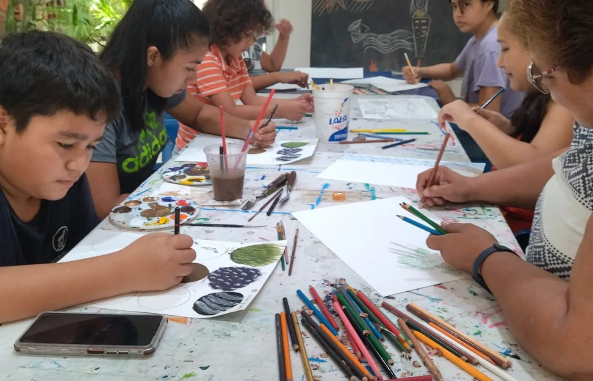
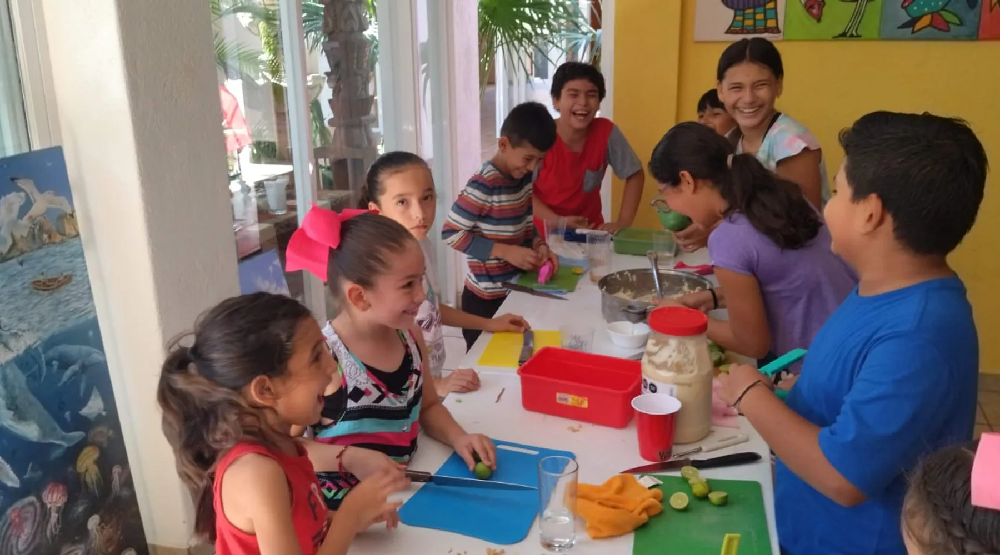
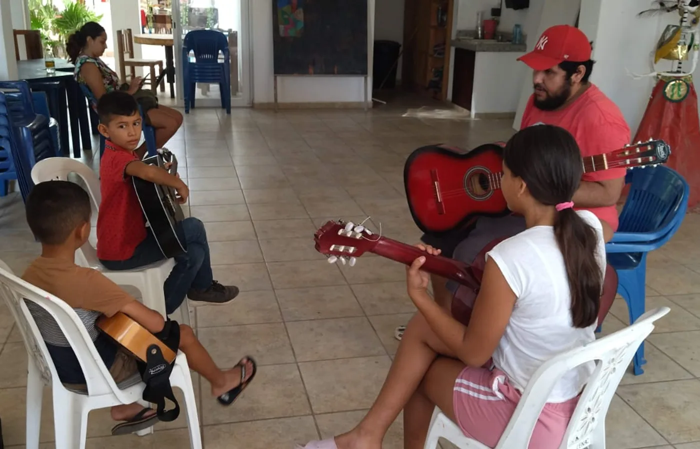
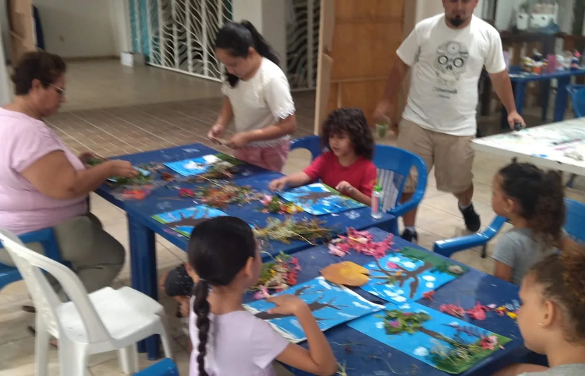

Centro cultural
Quienes somos
Somos un punto de encuentro donde el arte se vuelve convivencia: pintura, musica, movimiento y actividades que fortalecen la confianza y la imaginacion.

CENAC es un espacio vivo para crear, aprender y compartir. Talleres, cursos y experiencias culturales que acercan a niñas, niños, familias y comunidad.

Desliza
Centro cultural
Somos un punto de encuentro donde el arte se vuelve convivencia: pintura, musica, movimiento y actividades que fortalecen la confianza y la imaginacion.

Aprendizaje vivo
Abrimos procesos creativos para distintas edades: sesiones practicas, cercanas y cuidadas para explorar habilidades artisticas con acompanamiento.

Comunidad activa
Tu apoyo ayuda a sostener materiales, talleres comunitarios y experiencias accesibles para que mas personas puedan participar.
